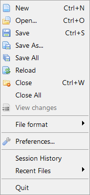

新建创建新的空源代码文件.
打开
打开现有的源代码文件进行编辑。
任何文本的文件将加载到源编辑字段。您也可以加载二进制文件与打开的菜单。这些将在内部文件查看器中显示。
保存
将当前活动的源代码保存到磁盘。如果文件从未保存，将提示您输入文件名。否则代码将会被保存到之前已经保存的文件中。
另存为...
保存当前文件到与上次保存位置不同的另一个位置. 你将需要为它命一个名。除此之外，源码将会被保存在上次保存的文件中。.
保存全部
保存所有当前打开源码。
重新加载
重新从磁盘载入当前活动源码。. 这将放弃所做的任何更改。
关闭
关闭当前激活的源码. 如果它是唯一打开的源码，开发环境将会显示一个新的空白文件。
关闭全部
关闭所有当前打开源码。
查看更改
显示当前源码与硬盘中存在的另一版本之间的变化。
文件格式
在这个子菜单中，你可以选择用于当前激活的源码保存到磁盘中时的文本编码格式和换行符制式。开发环境能设定文件编码为Ascii或UTF-8。可以设定换行符制式为Windows(CRLF), Linux/Unix (LF)和MacOSX (CR)。新建源码文件的默认值可以在首选项中设置。
配置
在这里你可以更改IDE所有设置来控制外观与行为。详细说明，请参阅自定义 IDE。
会话历史
会话历史记录是一个强大的工具，定期记录到数据库中的任何文件所做的更改。会话在IDE 启动事创建，IDE退出时关闭。对于回滚到以前的版本的文件或找回被删除或损坏的文件非常有用。这就像源码备份工具，但限制了时间 （默认情况下是一个月的记录）。它的目的不是要取代像 SVN 或 GIT这样真正的源代码版本控制系统。它是互补有更细的更改跟踪。源代码不加密存储，所以，如果你工作用到的的是比较敏感的源代码，请把数据库放在一个安全的位置，或者禁用此功能。若要配置会话历史的工具，请参阅首选项。

最近使用文件
在这里你可以看到最后被访问的文件的列表。在此子菜单中选择一个文件将它再次打开。
退出
当然，这个是用来关闭 IDE的。你会被询问是否保存任何未保存的源代码。